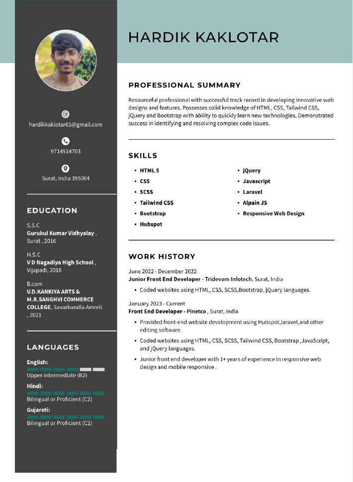

<section class="star-layers">
    <app-bennar></app-bennar>
    <app-about></app-about>
    <app-skills></app-skills>
    <app-services></app-services>
    <app-contact></app-contact>
    <app-footer></app-footer>
    <div class="star-layer" id="stars"></div>
    <div class="star-layer" id="stars2"></div>
    <div class="star-layer" id="stars3"></div>
    <p-toast></p-toast>
    <div class="button-content gap-1 gap-sm-3">
        <a class="scroll-top" *ngIf="showBtn$ | async" (click)="gotoTop()">
            <i class="fa-solid fa-xl fa-arrow-up"></i>
        </a>
       <div class="menuitems">
            <p-speedDial [model]="leftTooltipItems" className="speeddial-right" direction="up"></p-speedDial>
        </div> 
    </div>
    <!-- <button type="button" data-bs-toggle="modal" data-bs-target="#resumeModal"></button> -->
</section>


<!-- Modal -->
<div class="resume-model">
    <p-dialog header="Header" [(visible)]="visible" [modal]="true" [style]="{ width: '50rem' }"
        [breakpoints]="{ '1199px': '75vw', '575px': '90vw' }">
        <ng-template pTemplate="header">
            <div class="modal-top">
                <h3 class="fs-5 mb-0" id="resumeModalLabel">MY RESUME</h3>
            </div>
        </ng-template>
        <div class="modal-center row align-items-end">
            <div class="col-6">
                
            </div>
            <div class="col-6">
                
            </div>
        </div>
        <ng-template pTemplate="footer">
            <div class="d-flex gap-2 justify-content-end">
                <button class="button-primary-outline" (click)="visible = false">Close</button>
                <button type="button" (click)="closeAndDownload()" class="button-primary">Download</button>
                <p-toast></p-toast>
            </div>
        </ng-template>
    </p-dialog>
</div>